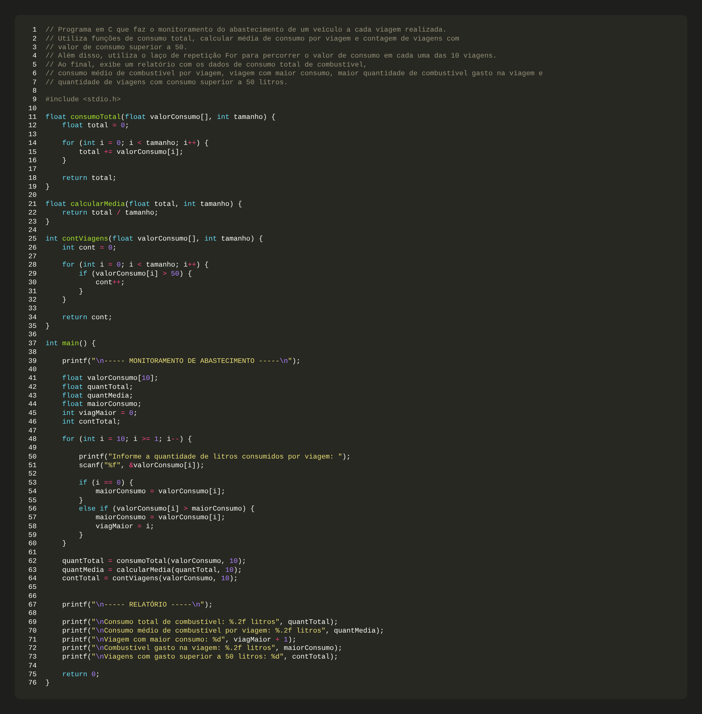
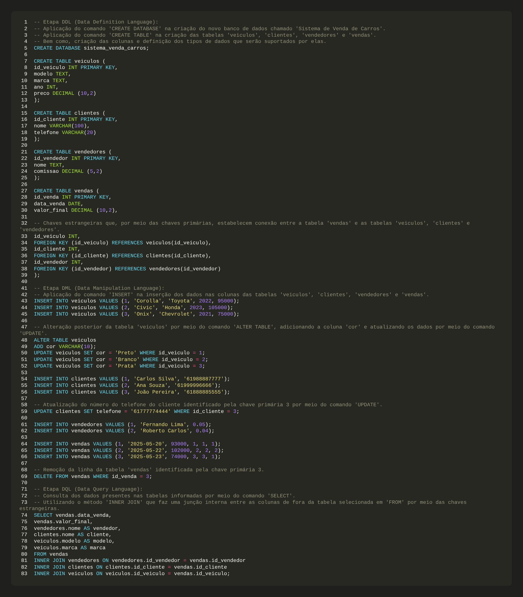
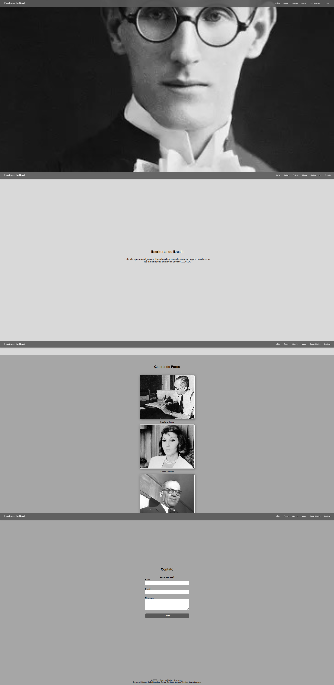
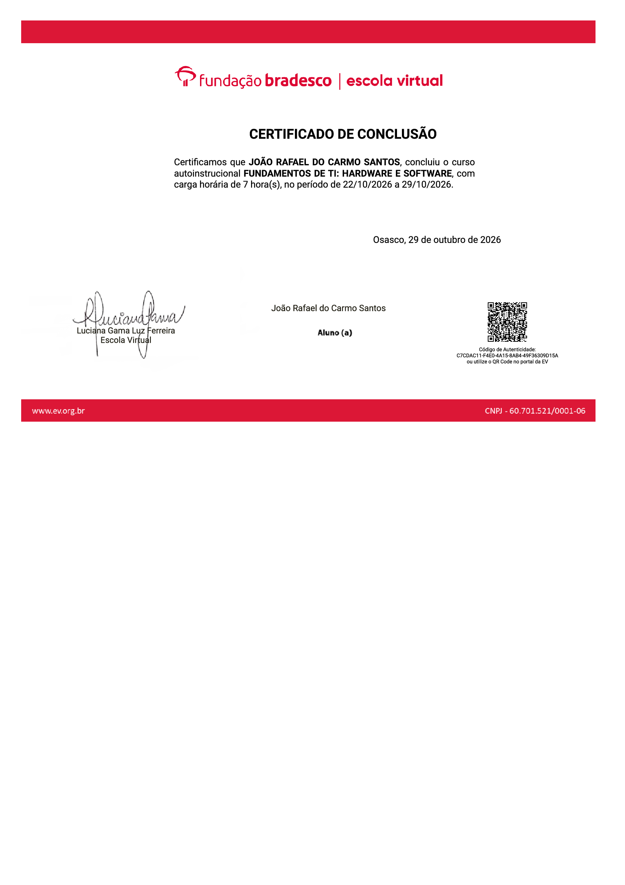
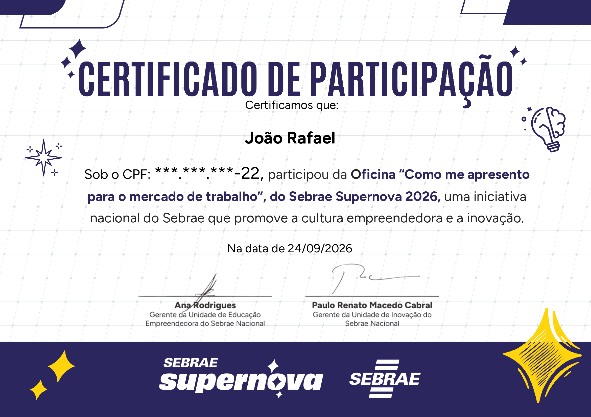
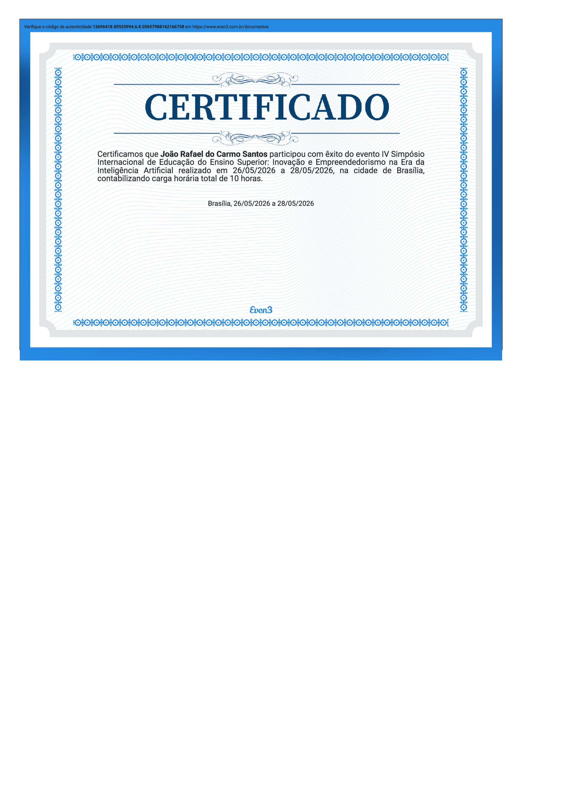

Bem-vindo ao meu Portfólio!
Minha trajetória na tecnologia começou na infância, com o interesse por videogames, que despertou minha curiosidade sobre o funcionamento das máquinas. Com o tempo, essa paixão se expandiu para sistemas computacionais, nos quais sempre tive facilidade para explorar e aprender novas funcionalidades. Hoje, busco transformar essa afinidade natural com a tecnologia em conhecimento e desenvolvimento de software, construindo minha carreira na área.
Atualmente, estou cursando Sistemas de Informação pelo Centro Universitário do Distrito Federal (UDF). Através dos conhecimentos obtidos durante minha formação, pretendo tornar meu GitHub um testemunho do meu crescimento na tecnologia, expondo pequenos e grandes projetos, bem como demonstrar minhas habilidades nas linguagens de programação trabalhadas.
Ao longo da minha trajetória acadêmica, pretendo documentar minha evolução e meu aprendizado nas diferentes tecnologias que venho estudando. Nesse sentido, utilizo o GitHub para compartilhar meus projetos, registrar meu progresso e aprimorar continuamente minhas habilidades. Os cards apresentados a seguir representam parte dessa jornada e serão constantemente atualizados e desenvolvidos conforme avanço na minha formação em Sistemas de Informação.

Exemplo de programa desenvolvido em linguagem C para monitorar o consumo de combustível de um veículo após cada viagem, demonstrando a aplicação prática dos meus conhecimentos em programação C.

Exemplo de sistema de vendas de veículos desenvolvido com SQL, demonstrando a aplicação prática dos meus conhecimentos em linguagem SQL e em Sistemas Gerenciadores de Bancos de Dados Relacionais (SGBDR).

Exemplo de site desenvolvido utilizando HTML e CSS, com o objetivo de apresentar escritores marcantes da história do Brasil, destacando suas trajetórias e principais curiosidades. O projeto demonstra a aplicação prática dos meus conhecimentos em desenvolvimento web, com foco na estruturação e estilização de páginas utilizando HTML e CSS.
Atualmente, estou cursando o primeiro ano de Sistemas de Informação e busco constantemente ampliar meus conhecimentos por meio de cursos complementares e aprendizado contínuo. Tenho como objetivo desenvolver habilidades que vão além da grade curricular da graduação, explorando diferentes áreas da tecnologia para construir uma formação mais sólida e me tornar um profissional cada vez mais completo, qualificado e preparado para os desafios do mercado de trabalho.


